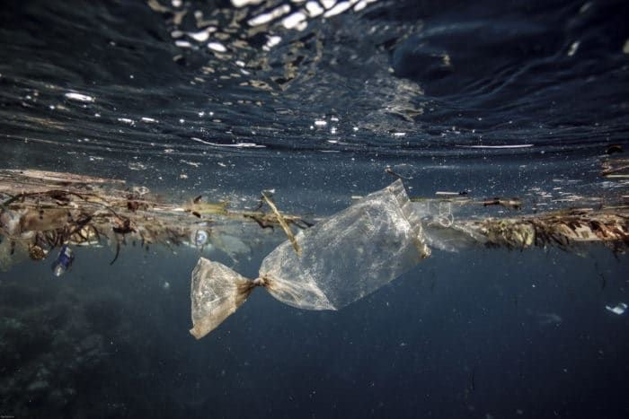

During the olden days, population was less. As time passed, health and medical facilities improved thereby
increasing the lifespan of people and in turn, increasing the population. Now, with 7.5 billion people on this
Earth, we have come a long way in every field. Although we have come a long way with such a big population there are bound to be problems. People nowadays face problems that have never been faced before and all of these problems are due to the increase in trash. Many activists such as Greta Thunberg have now started to travel all around the world to make people aware on what the future holds if we continue to do things the way we are currently doing. It is for this reason that Project Gyenkhu has been formed.
Project Gyenkhu is a small group of 13 students who have gotten together to help contribute to the solving of trash (plastics) problems in Bhutan. A documentary is to be made in which the students will be going to different places and will be filming the conditions of those places. Through this, the team hopes to make people realize that although Bhutan is carbon negative, it’s people need to be careful when it comes to handling plastics. “We need to focus on the small things because it’s the small that matter,” says Dremid (one of the members). Although it may be a small group, in a small country,
it can hopefully help spread awareness and make a difference.

Image source:Pinterest
Written by: Tshoning (Treasurer I)